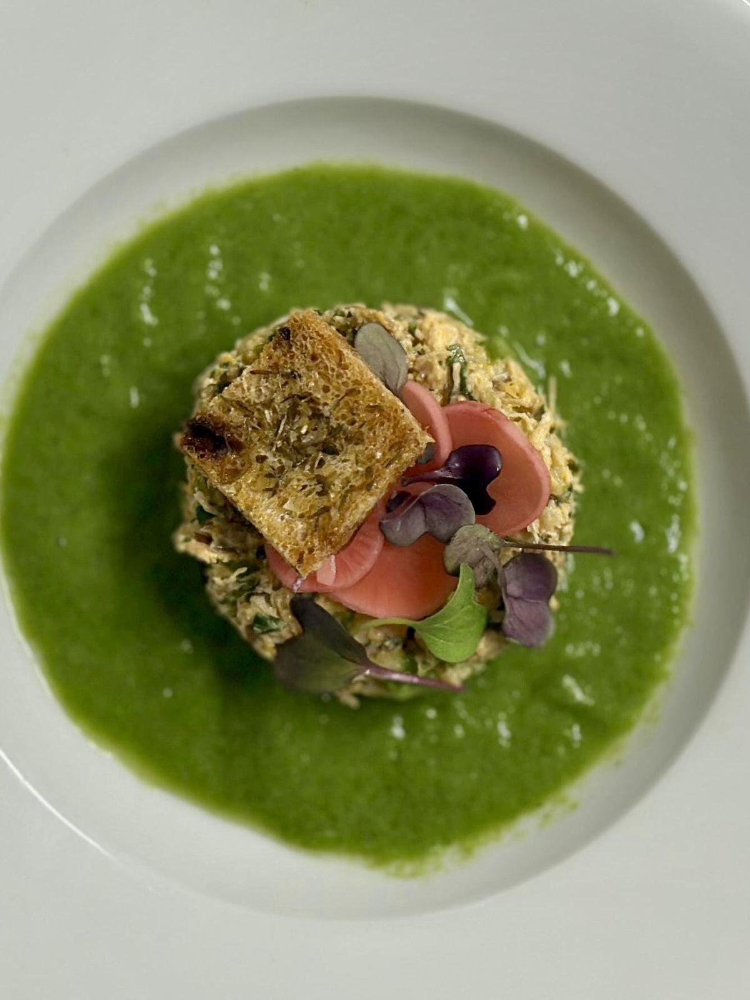
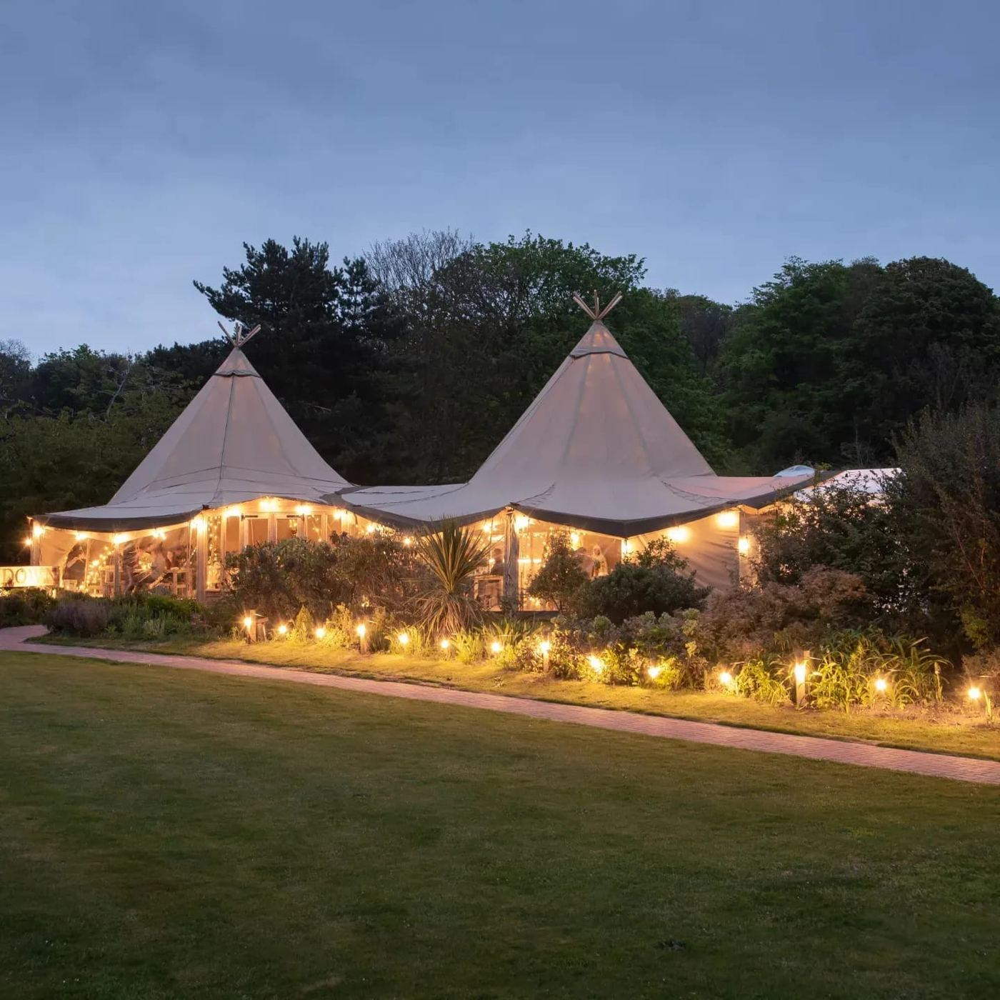

Most American golfers heading to England picture St Andrews or a week chasing an Open Championship venue. Few know that an hour and a half from London sits a genuine 18th-century Georgian estate.
Along a stretch of coastline locals call the "English Riviera," The Grove is the kind of quintessential English country house usually reserved for period dramas, not golf trips. Built roughly 250 years ago, it has operated as a family-run guest house since 1936.
Ivy climbs its brick facade, the gravel drive sweeps past daffodils in spring, and four acres of private grounds run down through woodland to the clifftop and the beach beyond. It's the kind of property that photographs like a film set and feels, somehow, even better in person.

A Working Kitchen Garden
Inside, the estate takes its dining as seriously as its history. Head Chef Sean O'Callaghan runs The Garden Rooms restaurant using produce grown on-site in the estate's Victorian greenhouse and kitchen garden — vegetables and herbs travel only a few yards from soil to plate, while Cromer crab, lobster and prawns arrive fresh from the coast a short walk away.

Sundown, After Dark
On the front lawn, a pair of canvas tipis make up Sundown, the estate's more relaxed restaurant — wood-fired pizzas and Norfolk-inspired small plates by day, and by evening, festoon lights and long, unhurried dinners under the trees.

Easily Combined with a Trip to The Open
For golfers already planning a trip to England for The Open Championship, North Norfolk is an easy add-on rather than a detour — and a striking contrast to it. Royal Cromer and Sheringham sit right on this stretch of coast, both a world away from the crowds of a major championship, and The Grove makes the ideal base between rounds.
We covered this in detail recently with Steve Pike of Spike on Golf & Travel, talking through what a North Norfolk stay-and-play actually looks like. The Grove came up as the natural answer — a genuine period property, ninety years into welcoming guests, doing quiet hospitality exceptionally well.
It's a rare thing to find a property with this much genuine history that hasn't been turned into a museum piece — The Grove still feels lived-in, warm and unmistakably a family home first, hotel second.
Plan Your Norfolk Coast Golf Trip
Speak to Golf East Anglia about building The Grove into your England itinerary.
Discover The Grove View Itineraries